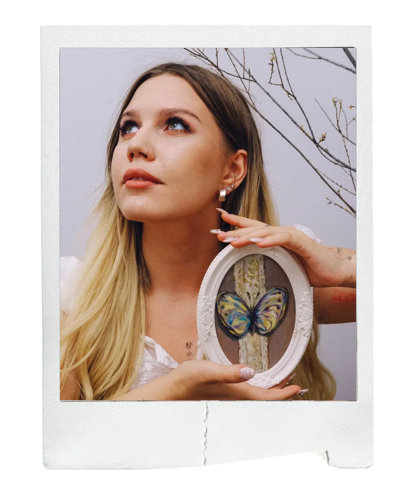
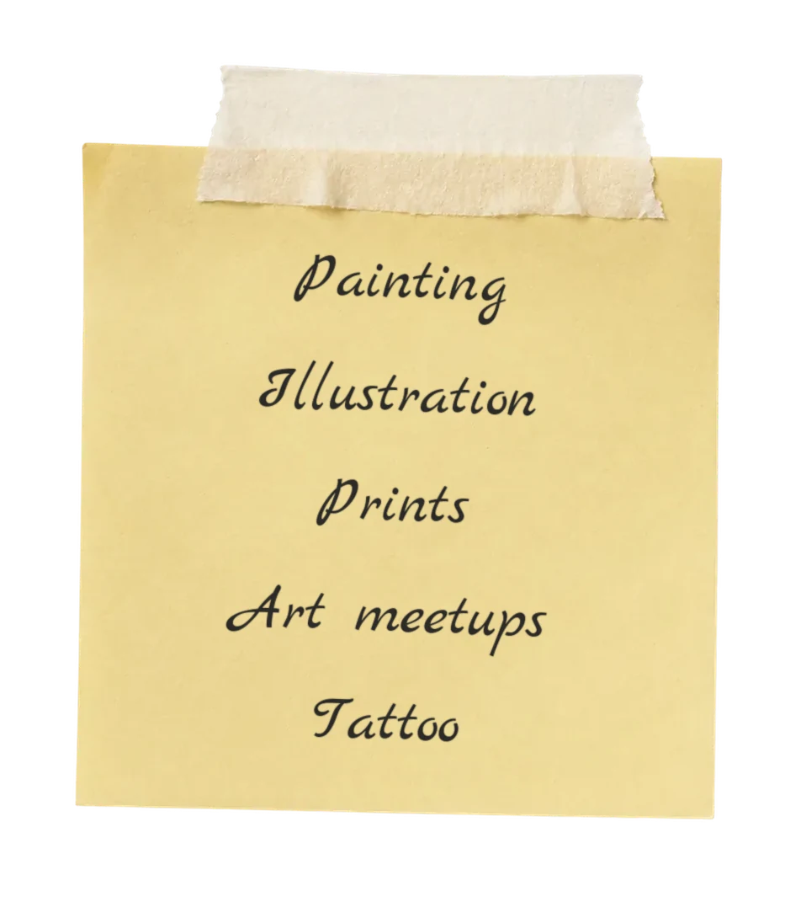
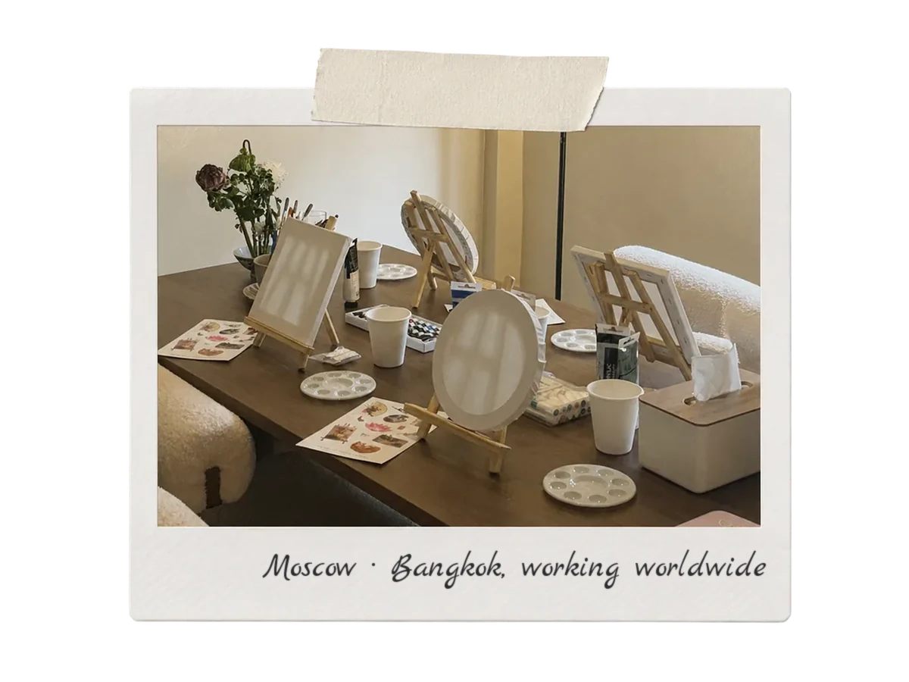

Artist and illustrator
Katerina MAO MAO
I create and explore contemporary imagery — about the fragility of the moment, the beauty of everyday life and inner silence
My works
on the fragility of the moment and beauty





Gallery of works
Paintings about states of mind, closeness,
nature and everyday observations
series
Between Moments


series
Mother of Pearl


Stickers & postcards


Artist Statement
In my artistic practice I explore the fragility of the present moment and ways of preserving fleeting states that easily go unnoticed in everyday life. I am interested in how image, colour and composition can convey a sense of calm and inner silence.


Much of my artistic language has been shaped by life in Asia, especially in Thailand. In my work I turn to Thai visual culture and natural motifs, rethinking them through the eyes of an artist who grew up in Russia. It becomes an exploration of the meeting of different cultures.
A special place in my practice belongs to the image of woman. I am interested not so much in an outward portrait as in inner states — the many facets of femininity, its vulnerability and strength.
I work with digital illustration, printmaking and oil painting. Whatever the medium, it is important to me to preserve the feeling of a living gesture, materiality and emotional depth in the image.
More about the artist


Katerina Makeeva
Katerina Makeeva is an artist and illustrator from Volgograd.
She works with digital illustration, art prints
and oil painting.
Languages and life in Asia shaped her interest in the meeting of
cultures, and the female image became her way of speaking about vulnerability,
strength and self-acceptance.
media
Digital · oil · printmaking
education
Children’s Art School No. 5 · Vystropov School · VSPU
Exhibitions
All exhibitions- 2026Mother of PearlDetails
Shade space,
Volgograd - 2026Between MomentsDetails
Solo exhibition
Teaory Teahouse, Bangkok, Thailand - 2026Group exhibitionDetails
515 Victory / 515 Event Hall,
Bangkok, Thailand - 2022Point of ViewDetails
Ikra creative cluster,
Volgograd - 2021Faster, Higher, Good EnoughDetails
Mashkov Volgograd
Museum of Fine Arts,
Volgograd
Art festivals
All events

Katerina Makeeva
Katerina Makeeva is an artist and illustrator from Volgograd. She works with digital illustration, art prints and oil painting.
Languages and life in Asia shaped her interest in the meeting of cultures, and the female image became her way of speaking about vulnerability, strength and self-acceptance.
media
Digital · oil · printmaking
education
Children’s Art School No. 5 · Vystropov School · VSPU
Exhibitions
- 2026“Mother of Pearl” exhibition, Shade space, Volgograd
- 2026solo exhibition Between Moments, Teaory Teahouse, Bangkok, Thailand
- 2026group exhibition, 515 Victory / 515 Event Hall, Bangkok, Thailand
- 2022“Point of View” exhibition, Ikra creative cluster, Volgograd
- 2021“Faster, Higher, Good Enough” exhibition, Mashkov Volgograd Museum of Fine Arts, Volgograd
Art festivals
- 2026art performance “Inner Garden”, Bangkok, Thailand
- 2022“Have You Seen Losev?”, Volgograd
- 2022art festival, Ikra creative cluster, Volgograd
- 2019art festival, Volgograd Regional Youth Library
Let’s turn your story
into art
Original paintings
I create original oil paintings inspired by your stories, memories or ideas. Each piece is developed individually — from concept and sketch to the finished work
Timing and price
2–8 weeks · Price on request


Illustrations
I create digital illustrations for books, brands, packaging, postcards, posters and commercial projects. I work with both my own and clients’ concepts, paying special attention to atmosphere and detail
Timing and price
3 days to 4 weeks · From 5,000 ₽ per illustration


Art meetups
I host art meetups and creative workshops in painting and digital illustration for people of any level. The format adapts to the participants and the theme of the event
Timing and price
Organisation — from 1 week · Price on request


Tattoo designs
I design original tattoos based on your idea, anatomy and wishes. Every design is created individually and never repeated
Timing and price
3 to 10 days · From 3,000 ₽


Kind words
Thank you to everyone who has trusted me with their story. Here are impressions of paintings, illustrations, workshops and personal projects.


Any questions?
-
Get in touch through the form on this site, by email or on social media. Tell me about your idea, the size, materials and timing you have in mind. After we discuss the project, I’ll prepare a proposal and a quote.
-
We discuss the concept and details of the piece, and I make a sketch if needed. Once everything is agreed and the deposit is paid, I start working. When it’s finished, you receive photos of the work before it ships.
-
Usually 2 to 8 weeks. The exact timing depends on the size, the complexity of the work and my current schedule.
-
I mostly work in oils on professional canvases. I also create digital illustrations and high-quality art prints.
-
Paintings are made on canvas stretched over a frame. On request I’ll help you choose a frame. Once fully dry, the paintings can be coated with protective varnish.
-
A 50% deposit is required to start. The rest is paid when the project is finished, before the work is handed over or shipped.
Let’s create
a piece together

Leave a request and I’ll get back to you
with answers to all your questions!